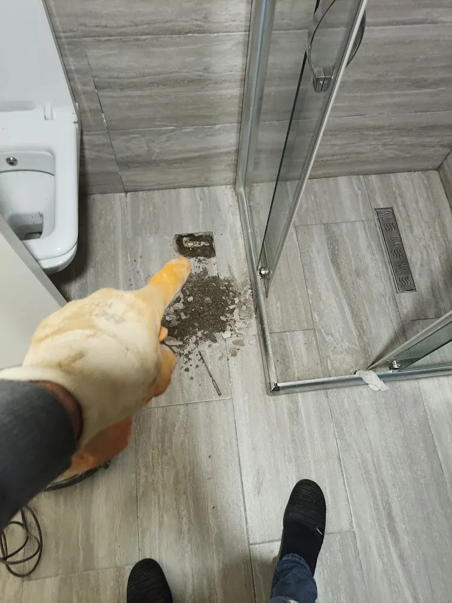
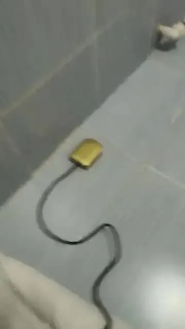
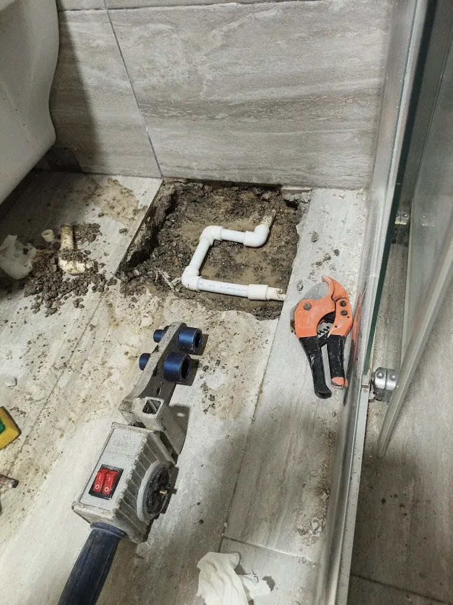

Anadolu Yakası · 7/24
Su Kaçağı Tespiti
Kaçağın yerini cihazla dinleyerek buluyor, bütün zemini kırmadan yalnızca kaçağın olduğu noktayı açıp boruyu onarıyoruz. Fiyatı işe başlamadan söylüyoruz.

- 7/24 hizmetGece, hafta sonu ve bayramda da arayabilirsiniz.
- Ortalama 30 dakikaAnadolu yakasında adrese ortalama 30 dakikada ulaşıyoruz.
- Kırmadan, kameralıTıkanıklığın yerini gerektiğinde kamerayla görüp kırmadan açıyoruz.
- Fiyat öncedenFiyatı işe başlamadan söylüyor, onayınız olmadan başlamıyoruz.
Su kaçağı tespiti nasıl yapılır?
Su kaçağı tıkanıklık gibi kendini hemen göstermez. Duvarda bir nem lekesi, alt kattan gelen bir şikâyet ya da bir anda kabaran su faturası… Kaçağın tam yerini bilmeden fayansları sırayla kırmak hem pahalı hem gereksiz. Biz önce cihazla dinleyip kaçağın yerini buluyor, sonra yalnızca o noktayı açıyoruz.

Önce dinliyoruz
Kaçak su dinleme cihazının algılayıcısını zemine ve duvara yerleştirip borudan kaçan suyun sesini dinliyoruz. Ses en güçlü olduğu noktada kaçağa en yakın yerdeyiz demektir.
Noktayı işaretliyoruz
Algılayıcıyı adım adım kaydırıp sesin en net geldiği noktayı buluyor ve işaretliyoruz. Açılacak yeri size bu noktada gösteriyoruz.
Yalnız o noktayı açıyoruz
Bütün banyoyu ya da koridoru kırmıyoruz; işaretlediğimiz noktada küçük bir alan açıp boruya ulaşıyoruz.
Boruyu onarıyoruz
Kaçak yapan bölümü kesip yeni parçayı PPR kaynak makinesiyle yerine kaynatıyoruz. Ardından hattı basınç altında deneyip kaçağın kesildiğini birlikte görüyoruz.
Su kaçağı olduğunu nasıl anlarsınız?
- Bütün musluklar kapalıyken su sayacı dönmeye devam ediyor
- Su faturası kullanımınız değişmediği hâlde arttı
- Duvarda, tavanda ya da süpürgelik hizasında nem ve kabarma var
- Alt kattaki komşunun tavanında lekelenme başladı
- Banyo ya da mutfak zemininde fayans derzleri sürekli ıslak
- Kombinin basıncı sık sık düşüyor (ısıtma tesisatında kaçak olabilir)
Su sayacıyla kaçak kontrolü: evde kendiniz yapın
- Evdeki bütün muslukları, rezervuarları, çamaşır ve bulaşık makinesini kapatın.
- Su sayacının üzerindeki küçük yıldız ya da çark şeklindeki göstergeye bakın.
- Gösterge hiç su kullanılmadığı hâlde dönüyorsa sayaçtan sonraki tesisatta bir kaçak var demektir.
- Emin olmak için sayaçtaki rakamı not edin, bir iki saat hiç su kullanmadan bekleyip yeniden bakın.
Sahadan: kaçak noktasını açma ve boru onarımı

Su kaçağı İSKİ'nin mi, sizin mi sorumluluğunuzda?
İstanbul'da su sayacına kadar olan şebeke hattı İSKİ'nin, sayaçtan sonraki tesisat abonenin sorumluluğundadır. Sayaç dönmüyor ama sokakta su akıyorsa ya da sayaçtan önce bir kaçak görüyorsanız İSKİ'yi ALO 185'ten arayın; sayaç musluklar kapalıyken dönüyorsa kaçak evinizin içindedir ve bizi arayabilirsiniz.
Tavandan su damlıyorsa ne yapmalısınız?
Tavandan su damlıyor ya da zeminden su çıkıyorsa önce sayacın yanındaki ana vanayı kapatın; vana kapanınca kaçak da durur. Elektrik prizlerine ya da aydınlatmaya su geliyorsa sigortayı da kapatın. Sonra bizi arayın; 7 gün 24 saat açığız.
7/24 su kaçağı ve tıkanıklık servis numarası0501 355 00 34Gece, hafta sonu ve bayram dahilSu kaçağı tespiti fiyatı neye göre değişir?
Fiyatı usta yerinde gördükten sonra, işe başlamadan söylüyoruz; onayınızı almadan işe başlamıyoruz.
Kaçağın yeri
Banyo zeminindeki bir boru ile duvar içinden geçen uzun bir hat aynı iş değildir.
Açılacak alan
Kaçağın derinliği ve üzerindeki zemin türü, açma ve kapatma işinin süresini etkiler.
Onarım
Tek bir bağlantının değişmesi ile bozulmuş bir boru bölümünün yenilenmesi farklı emek ister.
Hangi ilçelerde su kaçağı tespiti yapıyoruz?
Anadolu yakasının 14 ilçesinde: Adalar, Ataşehir, Beykoz, Çekmeköy, Kadıköy, Kartal, Maltepe, Pendik, Sancaktepe, Sultanbeyli, Şile, Tuzla, Ümraniye, Üsküdar. Anadolu yakasında adrese ortalama 30 dakikada ulaşıyoruz. Giderleriniz de tıkalıysa kameralı tıkanıklık tespiti ve banyo gideri açma sayfalarımıza bakabilirsiniz.
Su kaçağı tespiti: sık sorulan sorular
Su kaçağı kırmadan bulunur mu?
Kaçağın yerini kırmadan, cihazla dinleyerek buluyoruz. Boruyu onarmak için ise o noktayı açmak gerekir; biz yalnızca kaçağın olduğu küçük alanı açıyoruz.
Su kaçağı olup olmadığını nasıl anlarım?
Bütün muslukları kapatıp su sayacına bakın. Hiç su kullanılmadığı hâlde sayacın küçük göstergesi dönüyorsa sayaçtan sonraki tesisatta bir kaçak var demektir.
Su kaçağı İSKİ'nin mi sorumluluğunda?
Sayaca kadar olan hat İSKİ'nin, sayaçtan sonraki tesisat abonenin sorumluluğundadır. Ev içindeki kaçak için İSKİ ekip göndermez.
Fiyatı ne zaman öğrenirim?
Kaçağın yerini bulup ne kadar alanın açılacağını gördükten sonra, işe başlamadan söylüyoruz; onayınız olmadan açmıyoruz.
Şu an hizmet veriyoruz · 7/24
Su kaçağından mı şüpheleniyorsunuz?
7/24 arayabilir ya da WhatsApp'tan fotoğraf, video gönderebilirsiniz.
7/24 arayın0501 355 00 34- Anadolu yakasında adrese ortalama 30 dakikada ulaşıyoruz.
- Fiyat işe başlamadan söylenir
- Kırmadan, gerekirse kameralı